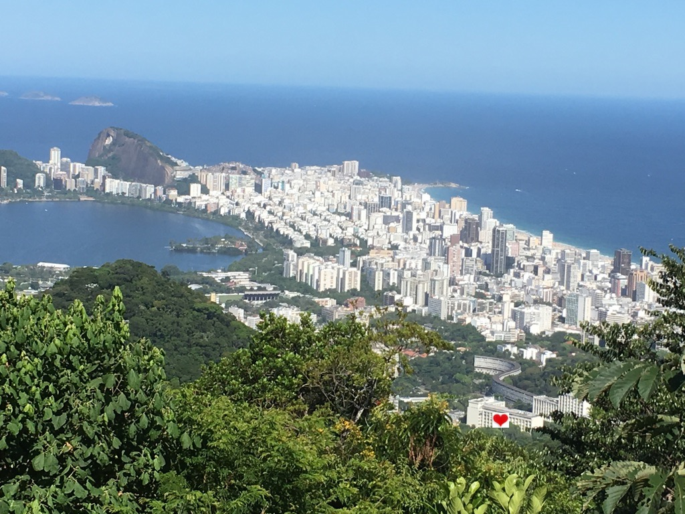

Um dos objetivos deste encontro é aproveitar os amplos interesses de pesquisa presentes no nosso departamento por meio de apresentações ministradas por alunos do nosso programa feat. um aluno convidado de fora. As palestras destinam-se a um público geral, constituído, principalmente, por alunos de graduação, pós-graduação e também por professores do nosso departamento.
Um segundo objetivo é conversar sobre o nosso programa de pós-graduação, abordando assuntos como: a participação na vida científica do nosso departamento (além de cursos, dissertação, tese); o apoio disponível aos estudantes; os desafios da vida estudantil durante a pandemia e as estratégias bem-sucedidas empregadas para enfrentar tais desafios.

Palestras científicas:
Gabriel Dias Couto
“Teoria Espectral de Grafos e Triângulos em G(n,m)”
Jéssica Andreza dos Santos
“Desigualdade de Harnack e Estimativas de Holder para Equações Elípticas de Segunda Ordem”
Lamartine Medeiros (UFRJ)
“Propriedades Dinâmicas via a Família Quadrática”
Raphael de Marreiros Machado
“Coberturas por Dominós de Cilindros e Regularidade de Discos”
Tamires Pereira Pinto da Silva
“Modelagem de Redes de Poros via Eixo Medial”
Apresentação do programa e comunicações sobre desafios:
Camila Sobrinho Crispim
Igor Caetano Diniz
Silvius Klein
Coordenadas
04 de junho de 2021 das 13 horas às 18 horas
Online, pelo zoom (o link será enviado por email)
DMAT PUC-Rio
Programação
13:00 - 13:40 Gabirel
13:50 - 14:30 Tamires
14:40 - 15:20 Lamartine
15:30 - 16:25 Silvius, Camila, Igor
16:30 - 17:10 Jéssica
17:20 - 18:00 Raphael
Socialização
Lanche, chá, café, bate-papo Entre a terceira palestra e a apresentação do programa.
Organizadores
Giovanna Luisa Coelho Leal
Marcelo Durães Capeleiro Pinto
Silvius Klein